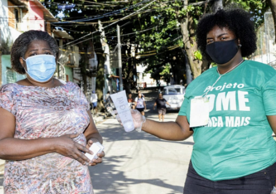
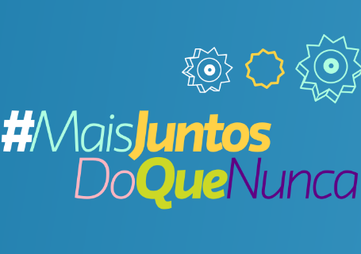
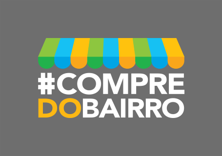

Para enfrentar o COVID-19 que transformou as nossas vidas, acionamos o melhor que o ser humano tem a oferecer: colaboração. Nossa essência sempre nos fez pensar no coletivo para fazer acontecer. Aqui, valorizar as pessoas e as
relações é parte do nosso trabalho, buscamos o sucesso responsável todos os dias e, agora, nossa paixão por desafios ganha um novo foco.
Conheça as nossas ações para contribuir com a sociedade, inspire-se e comece a fazer a diferença! Juntos, vamos sair
dessa ainda mais fortes.
filtre pelas iniciativas:#medidasinternas#doações#movimento#arturgrynbaum
27_mai
“Do Zero ao Topo” com Artur Grynbaum
#arturgrynbaum #infomoney #dozeroaotopo
Nosso CEO compartilha suas trajetórias, aprendizados e estratégias numa entrevista para o podcast “Do
Zero ao Topo” da InfoMoney. Artur começou a trabalhar com seu cunhado, Miguel Krigsner, aos 17 anos e o
ajudou
a transformar O Boticário na maior rede de franquias de cosméticos do mundo. O episódio apresenta a
história do empreendedor numa conversa franca sobre os desafios, as incertezas e os momentos decisivos
para
a empresa.
Numa conversa AO VIVO pelo Facebook com os jornalistas do Estadão, nosso CEO falou sobre a reabertura de
algumas lojas e as medidas de higiene para a segurança e proteção dos colaboradores e clientes. Artur
também
revela sobre a busca por novas tendências e inovações que se adaptem à nova realidade de compra e
demanda dos consumidores.
Nosso presidente é entrevistado pela Folha de São Paulo e fala das novas possibilidades que precisamos
encontrar ou criar em meio à pandemia. Artur Grynbaum afirma que de máscara, a consumidora esquece o
batom e
pinta os olhos. Assim, a procura por itens para cuidar de cabelos e unhas para fazer em casa cresceu na
pandemia, entre outras mudanças.
21_mai
Novos hábitos e desafios exigem novos planos
#arturgrynbaum #cnn #consumidor
No CNN Brasil Business, Artur Grynbaum fala sobre o novo comportamento do consumidor e os desafios
enfrentados pelo Grupo Boticário durante a crise. Destaca que a pandemia mudou completamente os planos
da companhia
e enxerga força nos meios digitais que já somam um acréscimo de 34% em novos consumidores no e-commerce.
Defende também que o caminho dos meios off-line é que ele esteja totalmente interligado com o mundo
virtual.
A BW Condidential é um veículo internacional voltada para o mercado da beleza com publicações de renome
mundial. Outro grande nome do universo da perfumaria global é Renata Ashcar, nossa parceira de longa
data e
quem nos chamou para a conversa. Nosso CEO, Artur Grynbaum, concedeu entrevista ao veículo falando sobre
o novo cenário diante da pandemia e apresentou as iniciativas implementadas durante o período, além de
avaliar e comentar as mudanças nos hábitos do consumidor.
20_mai
Fórum BandNews: Artur Grynbaum sobre comportamento
#arturgrynbaum #bandnewsfm #comportamento
Junto a outros grandes empresários, nosso CEO participa do Fórum BandNews de comportamento e volta a
explicar sobre os pilares que nos guiam para a retomada, ainda que ainda não tenhamos datas precisas. O
debate
fala sobre um novo mundo em relação a expectativas de reaberturas que acontecem como tentativas de
construir um novo futuro.
20_mai
Como os varejistas estão se preparando para a recuperação?
#arturgrynbaum #salesforce #varejo
Artur Grynbaum participa junto com Fernanda Romano, Diretora-Executiva de Marketing e Inovação da
Alpargatas e Alberto Serrentino, fundador da Varese Retail, de uma conversa sobre o “novo normal” do
Varejo no Brasil.
Nosso presidente destaca 3 pilares para os quais nossos esforços têm sido direcionados desde o começo da
pandemia: segurança dos nossos colaboradores (escritórios, fábricas e distribuição), continuidade do
negócio
(e stakeholders) e o pilar social quando fomos uma das primeiras empresas a fazerem doações e seguimos
ajudando a sociedade.
Para a RIC Mais, nosso presidente fala sobre liderança no varejo
#arturgrynbaum #RICmais #empreendedorismo #varejo
Artur Brynbaum compartilhou um pouco da sua trajetória pessoal e profissional até começar a trabalhar com
seu cunhado, Miguel Krigsner, em O Boticário. Com vasta experiência em gestão e administração de varejo,
Artur, que hoje é CEO do grupo, compartilha a sua visão sobre o negócio e cenário atual. Também cita o
empreendedorismo como uma das saídas para o Brasil vencer mais essa crise econômica.
15_mai
20 toneladas de reforço ao Gerando Falcões contra a COVID-19
Outras 20 toneladas de sabonetes, álcool líquido e em gel – que saem do montante de 216 toneladas a serem
doadas pelo Grupo Boticário – em parceria com a Gerando Falcões chegaram aos profissionais de saúde e às
pessoas em situação de vulnerabilidade social nas comunidades paulistas. O Gerando Falcões é um
movimento reconhecido pelo apoio a comunidades criado por Edu Lyra.
Estamos juntos com o Rio na luta contra a Covid-19. 20 toneladas de produtos de higiene (das 216 que
estão destinadas para doações) vão beneficiar 30 mil pessoas em vulnerabilidade social. A doação foi
feita por
meio da União Rio que denomina um movimento voluntário da sociedade civil carioca. Pessoas e
organizações não governamentais se uniram para ajudar os profissionais que estão na linha de frente
dessa luta. O
foco está nesses profissionais para que eles possam exercer suas funções com segurança e para que também
não sejam vítimas da pandemia. Além de dar suporte às milhares de famílias que vivem em favelas e áreas
de vulnerabilidade social e estão sem poder trabalhar.

08_mai
Matéria-prima para a Bahia
#doações #bahia #maisjuntosdoquenunca
Nossa segunda fábrica é localizada em Camaçari, na Bahia, e parte da nossa equipe está alocada no
Nordeste. Para ajudar nossa parte baiana, destinamos insumos para a produção de álcool gel que chegarão
a hospitais
e UPAs do Estado. Foram 15 mil litros de água purificada, usada em cosméticos, doados para que o SENAI
produza cerca de 120 mil litros em álcool em gel para as unidades de saúde.

05_mai
Artur Grynbaum na live do #CompredoBairro
#arturgrynbaum #live #compredobairro
O CEO do Grupo Boticário conversa com os idealizadores do movimento Compre do Bairro contando sobre sua
trajetória. Além de aconselhar os microempresários a olharem para seus próprios negócios para enxergarem
novas
oportunidades, Artur compartilha sua visão estratégica, abordando sobre gestão e planejamento de
negócios.
04_mai
Álcool em gel para apoiar a Central Única das Favelas
O Instituto Grupo Boticário fez essa parceria acontecer, possibilitando que ajudássemos 75 mil famílias.
Das 216 toneladas de itens de higiene que nos comprometemos em doar, 150 mil unidades foram direcionadas
para
a CUFA (Central Única das Favelas) que levou as doações a muitos Estados brasileiros, inclusive o
Amazonas. Criada há 20 anos entre jovens de várias favelas, a CUFA é reconhecida nacional e
internacionalmente
por promover integração e inclusão social em comunidades carentes.
A Brazil Conference é uma realizada anualmente por estudantes brasileiros de Harvard para discutir
política, economia, cultura e sociedade com líderes e representantes do Brasil. Este ano a conferência
foi online
e contou com a participação do nosso presidente, Artur Grynbaum, que participou de um painel em que
falou sobre a responsabilidade das empresas com a sociedade. Artur falou sobre como os nossos valores
estão
alinhados com um posicionamento de retribuir às pessoas, trazendo um pouco da nossa trajetória de busca
por sucesso responsável e algumas de nossas iniciativas.
Para acompanhar a reabertura do comércio em algumas cidades do Brasil, criamos um Plano de Retorno para
garantir a segurança total dos consumidores, como novas regras para uso de teste de produtos, e dos
funcionários.
O “Projeto Ambiente Seguro” para a volta dos colaboradores começou com ajustes de turnos para diminuir a
concentração de pessoas nas áreas comuns (refeitórios, vestiários e áreas de convivência) e também foi
estabelecido um distanciamento maior entre postos de trabalho. Dentro da fábrica, determinamos o uso de
máscara específica para proteção. Nos fretados, ocorre sanitização diária dos veículos e álcool em gel
disponível, além de controle da taxa de ocupação por veículo. Também foram entregues 2000 Kits de
Higiene (10 máscaras de pano + 1 bisnaga de álcool em gel + 1 cartilha específica) para colaboradores
com agendamento
prévio.
30_abr
Artur se reúne com grandes empresários para debater sobre o mundo pós-pandemia
#arturgrynbaum #moneyreport #economia
Junto com Renata Moraes Vichi do Grupo CRM, João Pedro Paro da Mastercard e Paulo Correa da C&A, Artur
Grynbaum participou do debate virtual organizado pela Money Report. A conversa foi sobre os impactos
econômicos
da pandemia do novo coronavírus, além dos desafios das empresas para enfrentar a crise, as
transformações digitais e as ações para a recuperação. Também foram debatidos novos formatos de negócios
que estão sendo
desenvolvidos, além de projeções sobre o mundo pós-pandemia.
Nosso presidente, Artur Grynbaum, participou de uma entrevista online para o Valor e falou sobre os
desafios dessa nova gestão no setor privado e sobre as medidas de prevenção e segurança que o Grupo
Boticário colocou
em prática. Também comentou sobre as novas tendências e hábitos de consumo que já modificam o cenário,
além da importância dos canais digitais e, principalmente, da construção de uma nova experiência do
consumidor.
Nossa produção de sabonetes, álcool líquido e em gel também foi noticiada no Jornal Nacional. Para a
produção das 216 toneladas doadas, o Grupo Boticário investiu R$ 5,7 milhões. As doações vão ajudar
pessoas em
situação de vulnerabilidade e a rede pública de saúde de 15 Estados. Nosso presidente, Artur Grynbaum
destacou: “Para nos é uma iniciativa que nos toca muito junto ao nosso propósito, aos nossos valores.
Sempre
fomos muito voltados à valorização do ser humano e das relações. E nada mais precioso neste momento que
todos nós ajudarmos, para que possamos passar da melhor maneira por essa situação tão crítica que todos
nós estamos vivendo”.
UOL Debate com Artur e convidados sobre a pandemia
#arturgrynbaum #valor #setorprivado
Numa entrevista online, nosso presidente participou do UOL Debate com executivos de mais cinco empresas
nos setores de aviação, consumo, telefonia, varejo e automobilístico. A conversa decorreu sobre os
desafios
que os negócios e a economia no Brasil enfrentam com a pandemia.
Na segunda fase das nossas iniciativas para amenizar os efeitos da pandemia, nossas operações continuam
paralisadas e somente as linhas de produção e envase de sabonetes e álcool (líquido e em gel) estão
funcionando.
Enquanto isso, nossos colaboradores podem contar com: • Assinatura premium do app Workout para
praticar atividades físicas em casa. • Programas de Educação Corporativa online. • Plataforma de
atendimento
psicológico online. • Vacinação contra a gripe. Para nossos franqueados, distribuidores e
revendedoras, flexibilizamos os prazos de pagamentos. Também eliminamos as taxas para entrada no
omnichannel
de O Boticário e: • Processos de venda: melhoramos a porcentagem de faturamento da revendedora e
possibilitamos compras por WhatsApp (O Boticário e quem disse, berenice?) para aumentar a realização de
negócios. • Cupom para as consultoras de loja participarem de venda online (O Boticário, quem disse,
berenice? e Beautybox). • Disponibilizamos documentários, playlists e outras programações de
entretenimento nas
redes sociais do Grupo Boticário.
07_abr
Doação para a FEMIPA
#doações #femipa #maisjuntosdoquenunca
Pensando em ajudar aos que estão na linha de frente da pandemia, assumimos também um compromisso com a
FEMIPA (Federação das Santas Casas de Misericórdia e Hospitais Beneficentes do Estado do Paraná) para
doação
de R$ 500 mil. Os recursos serão destinados à compra de equipamentos hospitalares (respiradores) e
testes de COVID-19.
06_abr
Apoiamos o movimento #CompreDoBairro
#movimento #compredobairro #maisjuntosdoquenunca
A inciativa #CompreDoBairro não tem fins lucrativos e o movimento visa profissionalizar o pequeno varejo,
oferecendo cursos e conteúdos especializados de capacitação e gratuitos. Outra frente do movimento é
apoiar
a compra do produto nacional do comerciante local. Segundo o SEBRAE, no Brasil, são 6,3 milhões de
pequenos negócios que sustentam diretamente 13 milhões de pessoas e 43 milhões de maneira indireta, além
de
empregar quase 7 milhões de profissionais. O Grupo Boticário aderiu ao projeto e reforça a importância
de apoiar os pequenos negócios a enfrentarem a pandemia.

01_abr
Nosso compromisso com o movimento #NãoDemita
#movimento #nãodemita #maisjuntosdoquenunca
O Grupo Boticário é uma das empresas que endossa essa iniciativa e assumiu esse compromisso com o seu
quadro de funcionários.
20_mar
Fábrica parada, mas a produção continua: 216 toneladas doadas.
#doações #216toneladas #maisjuntosdoquenunca
Logo no início da quarentena, paralisamos as linhas de produção de fragrâncias, maquiagens e cremes para
investir exclusivamente na produção de sabonetes, álcool líquido e em gel. Os colaboradores envolvidos
nesta
força-tarefa, nas fábricas de São José dos Pinhais (PR) e Camaçari (BA), trabalham com reforços nas
medidas de higiene e segurança. Uma ação para beneficiar pessoas em situação de vulnerabilidade social,
unidades
de saúde pelo Brasil, nossos colaboradores e seus familiares. Esta foi a primeira iniciativa de um
movimento que surge para unir nossas forças e fazer ainda mais: #MaisJuntosDoQueNunca. As iniciativas
desse
movimento foram aderidas por todas as marcas que fazem parte do Grupo Boticário.
Acreditamos que se cada um fizer a sua parte com responsabilidade, tendo consciência do impacto de cada
atitude, vamos conseguir mudar essa realidade.
Com os primeiros casos de COVID-19 detectados no Brasil, dividimos nossos esforços para mitigar os
efeitos da pandemia entre colaboradores, parceiros e consumidores. Realizamos o afastamento imediato de
funcionários
do grupo de risco, cancelamos eventos e viagens (nacionais e internacionais), enquanto as áreas do
administrativo ficaram em home office com jornada flexível. As equipes das fábricas e dos Centros de
Distribuição
ganharam EPIs específicos para evitar o contágio e, com cuidados redobrados de higiene e limpeza,
começaram a trabalhar em turnos diferenciados para evitar aglomerações.
Também seguimos com medidas de prevenção e segurança em nossa rede: • Redução dos horários de
funcionamento das lojas para alternar as equipes; • Suspensão dos testes de produtos em nossas lojas
e Espaços
da Representante; • Fechamento das Reservas Naturais Salto Morato (PR) e Serra do Tombador (GO);
• Suspensão da programação dos Espaços Culturais (SP e PR) do Instituto Grupo Boticário; • Suspensão
de Programa de Visitas nas fábricas de centros de distribuição (PR, SP e BA).s
25_mai
“Do Zero ao Topo” com Artur Grynbaum
#arturgrynbaum #infomoney #dozeroaotopo
Nosso CEO compartilha suas trajetórias, aprendizados e estratégias numa entrevista para o
podcast
“Do Zero ao Topo” da InfoMoney. Artur começou a trabalhar com seu cunhado, Miguel Krigsner,
aos
17 anos e o ajudou a transformar
O Boticário na maior rede de franquias de cosméticos do mundo. O episódio apresenta a
história
do empreendedor numa conversa franca sobre os desafios, as incertezas e os momentos
decisivos
para a empresa.
Numa conversa AO VIVO pelo Facebook com os jornalistas do Estadão, nosso CEO falou sobre a
reabertura de algumas lojas e as medidas de higiene para a segurança e proteção dos
colaboradores e clientes. Artur também revela sobre
a busca por novas tendências e inovações que se adaptem à nova realidade de compra e demanda
dos
consumidores.
Nosso presidente é entrevistado pela Folha de São Paulo e fala das novas possibilidades que
precisamos encontrar ou criar em meio à pandemia. Artur Grynbaum afirma que de máscara, a
consumidora esquece o batom e pinta os olhos.
Assim, a procura por itens para cuidar de cabelos e unhas para fazer em casa cresceu na
pandemia, entre outras mudanças.
21_mai
Novos hábitos e desafios exigem novos planos
#arturgrynbaum #cnn #consumidor
No CNN Brasil Business, Artur Grynbaum fala sobre o novo comportamento do consumidor e os
desafios
enfrentados pelo Grupo Boticário durante a crise. Destaca que a pandemia mudou completamente
os planos
da companhia
e enxerga força nos meios digitais que já somam um acréscimo de 34% em novos consumidores no
e-commerce.
Defende também que o caminho dos meios off-line é que ele esteja totalmente interligado com
o mundo
virtual.
21_mai
BW Confidential e os novos hábitos do consumidor
#arturgrynbaum #bwconfidential #consumidor
A BW Condidential é um veículo internacional voltada para o mercado da beleza com publicações
de
renome mundial. Outro grande nome do universo da perfumaria global é Renata Ashcar, nossa
parceira de longa data e quem nos chamou
para a conversa. Nosso CEO, Artur Grynbaum, concedeu entrevista ao veículo falando sobre o
novo
cenário diante da pandemia e apresentou as iniciativas implementadas durante o período, além
de
avaliar e comentar as mudanças
nos hábitos do consumidor.
20_mai
Fórum BandNews: Artur Grynbaum sobre comportamento
#arturgrynbaum #bandnewsfm #comportamento
Junto a outros grandes empresários, nosso CEO participa do Fórum BandNews de comportamento e
volta a explicar sobre os pilares que nos guiam para a retomada, ainda que ainda não
tenhamos
datas precisas. O debate fala sobre um novo
mundo em relação a expectativas de reaberturas que acontecem como tentativas de construir um
novo futuro.
20_mai
Como os varejistas estão se preparando para a recuperação?
#arturgrynbaum #salesforce #varejo
Artur Grynbaum participa junto com Fernanda Romano, Diretora-Executiva de Marketing e
Inovação da
Alpargatas e Alberto Serrentino, fundador da Varese Retail, de uma conversa sobre o “novo
normal” do Varejo no Brasil. Nosso presidente
destaca 3 pilares para os quais nossos esforços têm sido direcionados desde o começo da
pandemia: segurança dos nossos colaboradores (escritórios, fábricas e distribuição),
continuidade do negócio (e stakeholders) e o pilar
social quando fomos uma das primeiras empresas a fazerem doações e seguimos ajudando a
sociedade.
15_mai
Para a RIC Mais, nosso presidente fala sobre liderança no varejo
#arturgrynbaum #RICmais #empreendedorismo #varejo
Artur Brynbaum compartilhou um pouco da sua trajetória pessoal e profissional até começar a
trabalhar com seu cunhado, Miguel Krigsner, em O Boticário. Com vasta experiência em gestão
e
administração de varejo, Artur, que hoje
é CEO do grupo, compartilha a sua visão sobre o negócio e cenário atual. Também cita o
empreendedorismo como uma das saídas para o Brasil vencer mais essa crise econômica.
15_mai
20 toneladas de reforço ao Gerando Falcões contra a COVID-19
Outras 20 toneladas de sabonetes, álcool líquido e em gel – que saem do montante de 216
toneladas
a serem doadas pelo Grupo Boticário – em parceria com a Gerando Falcões chegaram aos
profissionais de saúde e às pessoas em situação
de vulnerabilidade social nas comunidades paulistas. O Gerando Falcões é um movimento
reconhecido pelo apoio a comunidades criado por Edu Lyra.
Estamos juntos com o Rio na luta contra a Covid-19. 20 toneladas de produtos de higiene (das
216
que estão destinadas para doações) vão beneficiar 30 mil pessoas em vulnerabilidade social.
A
doação foi feita por meio da União Rio
que denomina um movimento voluntário da sociedade civil carioca. Pessoas e organizações não
governamentais se uniram para ajudar os profissionais que estão na linha de frente dessa
luta. O
foco está nesses profissionais para
que eles possam exercer suas funções com segurança e para que também não sejam vítimas da
pandemia. Além de dar suporte às milhares de famílias que vivem em favelas e áreas de
vulnerabilidade social e estão sem poder trabalhar.
08_mai
Matéria-prima para a Bahia
#arturgrynbaum #live #creditsuisse
Nossa segunda fábrica é localizada em Camaçari, na Bahia, e parte da nossa equipe está
alocada no
Nordeste. Para ajudar nossa parte baiana, destinamos insumos para a produção de álcool gel
que
chegarão a hospitais e UPAs do Estado.
Foram 15 mil litros de água purificada, usada em cosméticos, doados para que o SENAI produza
cerca de 120 mil litros em álcool em gel para as unidades de saúde.
05_mai
Artur Grynbaum na live do #CompredoBairro
#arturgrynbaum #live #compredobairro
O CEO do Grupo Boticário conversa com os idealizadores do movimento Compre do Bairro contando
sobre sua trajetória. Além de aconselhar os microempresários a olharem para seus próprios
negócios para enxergarem novas oportunidades,
Artur compartilha sua visão estratégica, abordando sobre gestão e planejamento de negócios.
04_mai
Álcool em gel para apoiar a Central Única das Favelas
O Instituto Grupo Boticário fez essa parceria acontecer, possibilitando que ajudássemos 75
mil
famílias. Das 216 toneladas de itens de higiene que nos comprometemos em doar, 150 mil
unidades
foram direcionadas para a CUFA (Central
Única das Favelas) que levou as doações a muitos Estados brasileiros, inclusive o Amazonas.
Criada há 20 anos entre jovens de várias favelas, a CUFA é reconhecida nacional e
internacionalmente por promover integração e inclusão
social em comunidades carentes.
A Brazil Conference é uma realizada anualmente por estudantes brasileiros de Harvard para
discutir política, economia, cultura e sociedade com líderes e representantes do Brasil.
Este
ano a conferência foi online e contou com a
participação do nosso presidente, Artur Grynbaum, que participou de um painel em que falou
sobre
a responsabilidade das empresas com a sociedade. Artur falou sobre como os nossos valores
estão
alinhados com um posicionamento
de retribuir às pessoas, trazendo um pouco da nossa trajetória de busca por sucesso
responsável
e algumas de nossas iniciativas.
Para acompanhar a reabertura do comércio em algumas cidades do Brasil, criamos um Plano de
Retorno para garantir a segurança total dos consumidores, como novas regras para uso de
teste de
produtos, e dos funcionários. O “Projeto
Ambiente Seguro” para a volta dos colaboradores começou com ajustes de turnos para diminuir
a
concentração de pessoas nas áreas comuns (refeitórios, vestiários e áreas de convivência) e
também foi estabelecido um distanciamento
maior entre postos de trabalho. Dentro da fábrica, determinamos o uso de máscara específica
para
proteção. Nos fretados, ocorre sanitização diária dos veículos e álcool em gel disponível,
além
de controle da taxa de ocupação
por veículo. Também foram entregues 2000 Kits de Higiene (10 máscaras de pano + 1 bisnaga de
álcool em gel + 1 cartilha específica) para colaboradores com agendamento prévio.
30_mai
Artur se reúne com grandes empresários para debater sobre o mundo pós-pandemia
#arturgrynbaum #moneyreport #economia
Junto com Renata Moraes Vichi do Grupo CRM, João Pedro Paro da Mastercard e Paulo Correa da
C&A,
Artur Grynbaum participou do debate virtual organizado pela Money Report. A conversa foi
sobre
os impactos econômicos da pandemia
do novo coronavírus, além dos desafios das empresas para enfrentar a crise, as
transformações
digitais e as ações para a recuperação. Também foram debatidos novos formatos de negócios
que
estão sendo desenvolvidos, além de
projeções sobre o mundo pós-pandemia.
28_abr
O setor privado e os desafios da COVID-19
#arturgrynbaum #valor #setorprivado
Nosso presidente, Artur Grynbaum, participou de uma entrevista online para o Valor e falou
sobre
os desafios dessa nova gestão no setor privado e sobre as medidas de prevenção e segurança
que o
Grupo Boticário colocou em prática.
Também comentou sobre as novas tendências e hábitos de consumo que já modificam o cenário,
além
da importância dos canais digitais e, principalmente, da construção de uma nova experiência
do
consumidor.
23_abr
Artur Grynbaum no Jornal Nacional: “Nada mais precioso neste momento que todos nós ajudarmos”
Nossa produção de sabonetes, álcool líquido e em gel também foi noticiada no Jornal Nacional.
Para a produção das 216 toneladas doadas, o Grupo Boticário investiu R$ 5,7 milhões. As
doações
vão ajudar pessoas em situação de vulnerabilidade
e a rede pública de saúde de 15 Estados. Nosso presidente, Artur Grynbaum destacou: “Para
nos é
uma iniciativa que nos toca muito junto ao nosso propósito, aos nossos valores. Sempre fomos
muito voltados à valorização do ser
humano e das relações. E nada mais precioso neste momento que todos nós ajudarmos, para que
possamos passar da melhor maneira por essa situação tão crítica que todos nós estamos
vivendo”.
20_mai
UOL Debate com Artur e convidados sobre a pandemia
#arturgrynbaum #valor #setorprivado
Numa entrevista online, nosso presidente participou do UOL Debate com executivos de mais
cinco
empresas nos setores de aviação, consumo, telefonia, varejo e automobilístico. A conversa
decorreu sobre os desafios que os negócios
e a economia no Brasil enfrentam com a pandemia.
Na segunda fase das nossas iniciativas para amenizar os efeitos da pandemia, nossas operações
continuam paralisadas e somente as linhas de produção e envase de sabonetes e álcool
(líquido e
em gel) estão funcionando. Enquanto isso,
nossos colaboradores podem contar com: • Assinatura premium do app Workout para praticar
atividades físicas em casa. • Programas de Educação Corporativa online. • Plataforma
de
atendimento psicológico online. • Vacinação contra a gripe. Para nossos franqueados,
distribuidores e revendedoras, flexibilizamos os prazos de pagamentos. Também eliminamos as
taxas para entrada no omnichannel de O Boticário e: • Processos de venda:
melhoramos a porcentagem de faturamento da revendedora e possibilitamos compras por WhatsApp
(O
Boticário e quem disse, berenice?) para aumentar a realização de negócios. • Cupom para
as
consultoras de loja participarem
de venda online (O Boticário, quem disse, berenice? e Beautybox).
• Disponibilizamos documentários, playlists e outras programações de entretenimento nas
redes sociais do Grupo Boticário.
07_mai
Doação para a FEMIPA
#doações #femipa #maisjuntosdoquenunca
Pensando em ajudar aos que estão na linha de frente da pandemia, assumimos também um
compromisso
com a FEMIPA (Federação das Santas Casas de Misericórdia e Hospitais Beneficentes do Estado
do
Paraná) para doação de R$ 500 mil.
Os recursos serão destinados à compra de equipamentos hospitalares (respiradores) e testes
de
COVID-19.
06_abr
Apoiamos o movimento #CompreDoBairro
#movimento #compredobairro #maisjuntosdoquenunca
A inciativa #CompreDoBairro não tem fins lucrativos e o movimento visa profissionalizar o
pequeno
varejo, oferecendo cursos e conteúdos especializados de capacitação e gratuitos. Outra
frente do
movimento é apoiar a compra do produto
nacional do comerciante local. Segundo o SEBRAE, no Brasil, são 6,3 milhões de pequenos
negócios
que sustentam diretamente 13 milhões de pessoas e 43 milhões de maneira indireta, além de
empregar quase 7 milhões de profissionais.
O Grupo Boticário aderiu ao projeto e reforça a importância de apoiar os pequenos negócios a
enfrentarem a pandemia.
01_abr
Nosso compromisso com o movimento #NãoDemita
#movimento #nãodemita #maisjuntosdoquenunca
O Grupo Boticário é uma das empresas que endossa essa iniciativa e assumiu esse compromisso
com o
seu quadro de funcionários.
20_mar
Fábrica parada, mas a produção continua: 216 toneladas doadas.
#doações #216toneladas #maisjuntosdoquenunca
Logo no início da quarentena, paralisamos as linhas de produção de fragrâncias, maquiagens e
cremes para investir exclusivamente na produção de sabonetes, álcool líquido e em gel. Os
colaboradores envolvidos nesta força-tarefa,
nas fábricas de São José dos Pinhais (PR) e Camaçari (BA), trabalham com reforços nas
medidas de
higiene e segurança. Uma ação para beneficiar pessoas em situação de vulnerabilidade social,
unidades de saúde pelo Brasil, nossos
colaboradores e seus familiares. Esta foi a primeira iniciativa de um movimento que surge
para
unir nossas forças e fazer ainda mais: #MaisJuntosDoQueNunca. As iniciativas desse movimento
foram aderidas por todas as marcas
que fazem parte do Grupo Boticário.
Acreditamos que se cada um fizer a sua parte com responsabilidade, tendo consciência do
impacto
de cada atitude, vamos conseguir mudar essa realidade.
Com os primeiros casos de COVID-19 detectados no Brasil, dividimos nossos esforços para
mitigar
os efeitos da pandemia entre colaboradores, parceiros e consumidores. Realizamos o
afastamento
imediato de funcionários do grupo de
risco, cancelamos eventos e viagens (nacionais e internacionais), enquanto as áreas do
administrativo ficaram em home office com jornada flexível. As equipes das fábricas e dos
Centros de Distribuição ganharam EPIs específicos
para evitar o contágio e, com cuidados redobrados de higiene e limpeza, começaram a
trabalhar em
turnos diferenciados para evitar aglomerações.
Também seguimos com medidas de prevenção e segurança em nossa rede: • Redução dos
horários de
funcionamento das lojas para alternar as equipes; • Suspensão dos testes de produtos em
nossas lojas e Espaços da Representante; • Fechamento das Reservas Naturais Salto Morato
(PR) e Serra do Tombador (GO); • Suspensão da programação dos Espaços Culturais (SP e
PR) do
Instituto Grupo Boticário; • Suspensão de Programa de Visitas nas fábricas
de centros de distribuição (PR, SP e BA).s